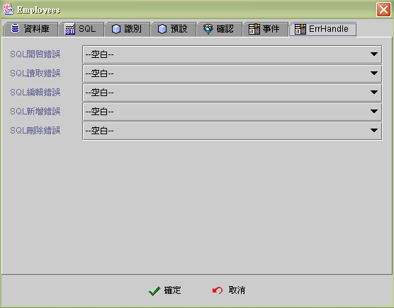

|

|
 |
Chapter 9
Data Source |
 |
9.
資料來源 (data source)
資料來源設計規劃程序
(data source design procedures)
資料來源的類別
(data source type)
資料庫資料表列示
(database tables listing)
資料來源列示 (data source listing)
全域資料來源
屬性
(globe data source property)
資料表資料來源設定 (table data source setting)
SQL資料來源設定 (SQL data source setting)
Buffer資料來源設定 (Buffer data source setting)
資料來源讀取、新增、存檔、刪除的系統內部程序
(fetch, insert, post, delete system internal procedures)
資料來源
(data source) 是應用程式 (application)，將在此視窗模組 (form)
中運算操作，具有資料表結構的資料 (table structure data)。資料來源
(data source) 依來源與產生的方式不同分為三種類別，設計師可依資料來源設計規劃程序，將所要操作的資料來源加入視窗的資料來源中。在資料來源列示
(data source listing)
中，將會列示所有資料欄位的結構與型態。設計師可以據此將元件內含連結至資料欄位
(data binding)，執行期 (runtime)
關於資料來源欄位的更新、存檔，將會由元件及資料來源的內部程序自動執行。資料來源的開啟與關閉
(open and close data source)，除了全域資料來源 (globe data source)
外，是整批作業，因此應用程式中必須有程序性開啟 (open)
的資料來源，應將【自動開啟】的屬性關閉，而以【觸發資料來源】事件的方式，將觸發事件連結
(link)
在相關的事件流程中。資料來源亦應用於報表系統中，報表在列印期，除了會移動資料記錄外，相關的事件也會一併啟動。
資料來源是虛擬模式
(virtual mode) 的資料元件，資料來源在開啟 (open)
時，並不會讀入所有資料記錄 (record) 至客戶端 (client)
的資料記錄緩衝區 (record buffer) 中，而是根據資料來源擷取列數的設定
(row fetch)，先行讀入，在元件或事件驅動時，需要的資料記錄不在緩衝區
(buffer)
且尚未至檔尾 (EOF) 時，資料來源會以背景執行緒 (background
thread) 按擷取記錄數 (row fetch)，讀入檔案記錄 (record)
至資料記錄緩衝區 (record buffer) 中。
資料來源設計規劃程序
(data source design procedures)
-
選用資料表資料來源
(table
data source)、 SQL資料來源 (SQL data source) 或 Buffer資料來源 (buffer
data source) 處理資料。參閱 資料來源的類別
(data source type)。
-
設定資料來源與
jLIVE™ middle ware 資料記錄列擷取數 (row fetch)
。
讀取列是客戶端
(client) 與資料庫伺服器 (database server) 每次需求 (request)
與回應 (response) 的資料記錄列 (record) 擷取數。
-
設定大型資料
(Blob and Clob) 欄位的擷取方式。
-
資料來源是否允許使用者編輯
(updateable)。
SQL資料來源 (SQL data source)
是關聯資料的結果集，內定是唯讀 (read only)資料。
-
是否與其他視窗模組共享此資料來源
(globe data source)。
-
是否在視窗開啟後隨即開啟
(auto open) 此資料來源。
-
編輯測試資料表、SQL資料來源的SQL
命令，或定義Buffer資料來源的欄位結構 (field structure)。
-
具有可編輯屬性的資料來源，選取資料列識別
ID 欄位。
-
以運算式
(formula) 設定資料來源新增時欄位預設值。
-
資料來源讀取
(fetch)
新增 (insert) 存檔 (post) 刪除 (delete) 的作業正確性檢核。
設計師可以根據使用者輸入的資料正確性，或應用程式的流程控管需求，限制資料來源是否執行讀取(fetch)
新增 (insert) 存檔 (post) 刪除 (delete) 的作業。
-
設定讀取、更新、新增、刪除的前後事件
(event)。
-
資料伺服器
(database server) 產生 SQL 錯誤時，應用程式回復的程序。
▲Top
資料來源的類別
(data source type)
-
資料表資料來源
(Table data source)：執行選取 (select) 單一資料表 (table) SQL命令的結果集
(result set)。
-
SQL資料來源
(SQL data source)：執行選取 (select) 多個關連資料表(table join)
SQL命令的結果集 (result set)。
-
Buffer資料來源
(Buffer data source)：是由設計師定義 (define) 使用於此視窗
(form) 具有資料表結構 (table structure) 的資料來源。Buffer資料來源的起始
(initial) 及使用 (operation) 只存在於客戶端 (client)。
| |
資料表資料來源 |
SQL資料來源 |
Buffer資料來源 |
| 選用 |
由資料表列示選取 |
由資料來源列示加入 |
由資料來源列示加入 |
| SQL |
選取 (select) 單一資料表(table) SQL命令的結果集
(result set) |
選取 (Select) 多個關連資料表(table join)
SQL命令的結果集 (result set) |
定義資料欄位結構 (field
structure) |
| 存取 |
可編輯(updateable) |
唯讀 (read only)，但可設定為使用者端擬 Buffer 資料來源操作 |
可編輯(updateable) |
| 來源 |
資料庫資料表 (tables) |
資料庫資料表 (tables)及關連結果集
(join-tables) |
客戶端即時資料 |
| 文字檔載入 |
| 其他資料來源載入 |
| 查詢 |
給定參數 (parameters) 執行 SQL
命令 |
給定參數 (parameters) 執行 SQL
命令 |
重新載入以過濾調件選取資料 |
| 適用 |
資料庫資料表 (tables)
維護 |
資料表的關聯統計與彙總 |
暫存使用者資料 |
| 文字檔載入 |
| 批次 (batch) 作業的資料處理 |
▲Top
資料庫資料表列示
(database tables listing)
資料庫資料表
(tables) 列示視窗 (listing panel) 位於設計平台 (design framework)
的右上方，設計師在專案中所設定加入的資料庫(database)，在資料表列示中，系統會以樹狀結構，列示所有已存在的資料表
(tables)
。設計師可以滑鼠雙擊或按滑鼠右鍵，將此資料表加入資料來源
(data source) 中。
▲Top
資料來源列示
(data source listing)
資料來源列示
(data source listing) 顯示在此視窗 (form)
中，設計師所選用的資料表 (table data source) 、執行 SQL
命令所產生的資料結果集 (SQL data source)
、自定欄位型別的暫存緩衝區資料表 (buffered data source)。設計師可以按滑鼠右鍵以功能選單加入
(add)、編輯 (edit properties)、刪除 (remove)
資料來源。在每個資料來源下，系統會列示資料欄位名稱及欄位的屬性資料，包括：類別
(type)、精密度 (precision)、小數 (scale)、唯讀 (read
only)、可查詢 (searchable)、區分大小寫 (case
sensitive)、自動累加 (auto
increase)、可寫入 (writable)、預設可寫入 (default writable) 等欄位資訊，由於這些資訊是由資料庫驅動程式
(database driver) 所提供，真正的欄位屬性必須參照資料庫系統
(database system) ，因為有些驅動程式回覆的資料並不正確。
▲Top
全域資料來源
屬性
(globe data source property)
jLIVE
Builder™ 可以將資料來源設定為全域 (globe)
資料來源，允許多個視窗模組 (form)
同時存取一個資料來源。資料來源在每個視窗中的行為性
(behavior) 是同步 (synchronized)
且即時反應操作狀態，例如：兩個共用全域資料來源的視窗，其中之一移動資料記錄時，另一視窗亦會反應資料記錄移動，包括相關的連結元件
(data aware component)
的內含值亦會同步更新，資料來源的編輯、新增、刪除也會有同樣的效果。
全域
(globe) 資料來源是以資料來源名稱 (data
source name) 及全域屬性的核取 (checked globe data source)
與一般資料來源作區分，所以將資料來源名稱，在多個視窗資料來源設定中，給予相同的名稱且核取全域屬性，這些視窗即共享同一資料來源。在這些共享資料來源的視窗中，第一個開啟的視窗，將以其資料來源開啟的
SQL 指令開啟 (open)
資料來源，隨後開啟的視窗將共享其資料。開啟此資料來源的視窗關閉
(form close) 時，此共享的資料來源並不一定關閉 (close data
source)，而是由最後關閉的共享資料來源視窗負責執行資料來源關閉
(close data source)。
全域
(globe) 資料來源在視窗中分享其資料記錄資料(record
data)，全域資料來源在各個視窗上其餘的屬性設定(預設、確認、事件、Error
handle)，若有不同時，會以使用者目前操作的視窗設定為準。
▲Top
資料表資料來源設定 (table data source
setting)
SQL資料來源 (SQL data source setting)
Buffer資料來源 (Buffer data source
setting)
▲Top
資料表資料來源 資料庫屬性頁 (table data source database properties)
-
資料庫名稱 (database name)：
顯示資料來源的資料庫名稱。
-
資料來源 (data source name)： 資料來源名稱。同一視窗中不可重覆，名稱允許修改，所有參照此名稱的元件及運算式會自動更新，但直接指名
(以字串給值) 的資料來源名稱不會更新。
-
讀取列
(row fetch)： 資料來源與資料庫伺服器 (database server)
每次需求 (request) 與回應 (response) 的資料記錄列 (record) 擷取列數。預設值為
15 列，0 表示預設值，-1 表示回覆所有列 (all rows)。當資料紀錄不多且是屬於關連資料來源
(lookup data source) 時，應設定為
-1 (回覆所有列)，加快應用程式讀取的效率。
-
Blob 讀取 (Blob fetch)：大型資料
(Blob and Clob) 欄位的擷取方式，設定在資料來源開啟 (open)時，大型資料
(Blob and Clob) 欄位的資料以何種方式傳輸資料。
應要求
(request on demand)：資料來源開啟時，大型資料
(Blob and Clob) 欄位的資料，不隨資料記錄傳回，而是連結
(binding) 該欄位的元件 (圖片元件或備忘錄元件)，在需顯示
(display) 時，以背景執行緒 (background thread)，自行要求讀取資料。此機制能使視窗開啟的速度加快，圖片(Blob)
或資料(Clob) 在資料記錄顯示後再呈現。
目前記錄
(current row)：資料來源開啟時，只傳回一筆目前資料記錄的大型資料
(Blob and Clob) 欄位資料，資料來源資料紀錄移動時，連結
(binding) 該欄位的元件 (圖片元件或備忘錄元件)，在需顯示
(display) 時，再以背景執行緒 (background thread)，要求讀取其餘資料記錄的資料。
-
全部 (all rows)：資料來源開啟時，傳回所有資料記錄的大型資料
(Blob and Clob) 欄位資料。
-
唯讀 (read only)：
設定資料來源為唯讀。
-
全域資料來源 (globe data source)：
全域資料來源。參照
全域資料來源屬性 (globe data source property)。
-
自動開啟 (auto open)：
視窗開啟後，隨即自動開啟資料來源。
-
結果集 (result set)：JDBC 資料庫執行
SQL statement 時所要產生的結果集 (result set) 的型式。取消共同
Type and Concurrency ，按下
專屬設定
系統會出現結果集 Type 和 Concurrency 設定視窗。共同 Type and Concurrency 採用在資料庫設定頁所設定的值，專屬設定即此資料來源另行設定Type
和 Concurrency 。

-
Type：JDBC 資料庫執行 SQL
statement 時所要產生的結果集 (result set) 的型式。
-
FORWARD_ONLY
-
SCROLL_INSENSITIVE
-
SCROLL_SENSITIVE
JDBC version 1.0 不支援 Type
和 Concurrency，使用 JDBC 1.0 驅動程式時，請將 Type 選為 FORWARD_ONLY ，系統內部會自動以不含 Type 及
Concurrency 的函式 (method) 建立 SQL statement。
除非驅動程式不支援，否則不要選用 FORWARD_ONLY，那對系統效率的影響非常大。
關於 JDBC 結果集 (result set) 的型式 各資料庫系統的驅動程式 (driver)
實作的機制不盡相同，請參照各資料庫系統的驅動程式的說明。一般而言，FORWORD_ONLY 會以資料串流的型式，擷取 結果集 (result
set)，驅動程式不會 cache 結果集資料，適用於大資料讀取時應用，例如：使用【複製資料來源至另一資料來源】事件時，來源 資料來源 (source datasource) 就以選用 FORWORD_ONLY 為宜。
SCROLL_INSENSITIVE 與 SCROLL_SENSITIVE 的分別，以 Oracle 為例，選用 SCROLL_INSENSITIVE
時，多個使用者同時更新同一資料記錄 (record) 時 ，檔案資料記錄值為最後更新的使用者輸入值。若選用 SCROLL_SENSITIVE
時，多個使用者同時選取同一資料記錄時，當第一個使用者更新檔案資料記錄值後，在此使用者之後選取 (select)
此資料檔案記錄的使用者，不可更新此資料檔案記錄，驅動程式會拋出 (throw) SQL 錯誤訊息，告知在選取 (select)
此資料檔案記錄後資料已被更新 (dirty data)，使用者需再次選取 (select) 此資料記錄，再進行更新。
-
Concurrency：JDBC 資料庫執行
SQL statement 時所要產生的結果集 (result set) 的同步存取狀態。
JDBC 1.0 和 舊版的驅動程式大都不支援 UPDATABLE， jLIVE™
middle ware 會自行運作資料記錄更新的操作 。除非設計師確定驅動程式支援 UPDATABLE 且 UPDATABLE 的效率較好，否則選則
READ_ONLY 即可。
-
FetchSize：JDBC
驅動程式每次至資料庫擷取結果集的大小，並非所有驅動程式及資料庫都支援。 0 值代表不作設定，使用預設值， -99
值系統會將其轉換為整數最小值，以因應某些資料庫設定，例如：mySQL 。
▲Top
SQL資料來源 資料庫屬性頁 (SQL data source database properties)
-
資料庫名稱 (database name)： 選取資料來源的資料庫別名。
-
資料來源 (data source name)： 資料來源名稱。同一視窗中不可重覆，名稱允許修改，所有參照此名稱的元件及運算式會自動更新，但直接指名
(以字串給值) 的資料來源名稱不會更新。
-
讀取列
(row fetch)： 資料來源與資料庫伺服器 (database server)
每次需求 (request) 與回應 (response) 的資料記錄列 (record) 擷取列數。預設值為
15 列，0 表示預設值，-1 表示回覆所有列 (all rows)。當資料紀錄不多且是屬於關連資料來源
(lookup data source) 時，應設定為
-1 (回覆所有列)，加快應用程式讀取的效率。
-
Blob 讀取 (Blob fetch)：大型資料
(Blob and Clob) 欄位的擷取方式，設定在資料來源開啟 (open)時，大型資料
(Blob and Clob) 欄位的資料以何種方式傳輸資料。
應要求
(request on demand)：資料來源開啟時，大型資料
(Blob and Clob) 欄位的資料，不隨資料記錄傳回，而是連結
(binding) 該欄位的元件 (圖片元件或備忘錄元件)，在需顯示
(display) 時，以背景執行緒 (background thread)，自行要求讀取資料。此機制能使視窗開啟的速度加快，圖片(Blob)
或資料(Clob) 在資料記錄顯示後再呈現。
目前記錄
(current row)：資料來源開啟時，只傳回一筆目前資料記錄的大型資料
(Blob and Clob) 欄位資料，資料來源資料紀錄移動時，連結
(binding) 該欄位的元件 (圖片元件或備忘錄元件)，在需顯示
(display) 時，再以背景執行緒 (background thread)，要求讀取其餘資料記錄的資料。
-
全部 (all rows)：資料來源開啟時，傳回所有資料記錄的大型資料
(Blob and Clob) 欄位資料。
-
唯讀 (read only)：
設定資料來源為唯讀，SQL 資料來源只能設定為唯讀。
-
全域資料來源 (globe data source)：
全域資料來源。參照
全域資料來源屬性 (globe data source property)。
-
自動開啟 (auto open)：
視窗開啟後，隨即自動開啟資料來源。
-
允許 SQL
結果集擬 Buffer DataSource 操作 (Buffer DataSource operation)：SQL
資料來源內定為唯讀。設定此屬性，SQL
資料來源即可編輯 (updatable)，但是對此資料來源的新增、修改、刪除，將只作用於客戶端 (client) 的 SQL 結果集 (result
set)，並不會更改到後端資料庫原資料記錄。
-
結果集 (result set)：JDBC 資料庫執行
SQL statement 時所要產生的結果集 (result set) 的型式。參閱 資料表資料來源 結果集。
▲Top
Buffer 資料來源 資料庫屬性頁 (buffer data
source database properties)
-
資料來源 (data source name)： 資料來源名稱。同一視窗中不可重覆，名稱允許修改，所有參照此名稱的元件及運算式會自動更新，但直接指名
(以字串給值) 的資料來源名稱不會更新。
-
全域資料來源 (globe data source)：
全域資料來源。參照
全域資料來源屬性 (globe data source propertry)。
-
刪除的記錄即時移除 (Remove deleted record just in time)：當資料記錄刪除時隨即移除，並將目前資料記錄移至下筆記錄。
▲Top
SQL
屬性 (SQL properties)
資料表資料來源
(Table data source) 及 SQL 資料來源，皆是以執行 SQL
指令取得其結果集 (result set)，兩者不同處在於，資料表資料來源所選取
(select) 的是單一資料表 (table) 且具有可編輯性 (updateable) ，SQL資料來源則否。SQL
指令含有參數 (parameters) 時，jLIVE™ middle ware 會以 JDBC
的 PreparedStatement 予以執行。SQL 指令中以 ?
代表傳入的參數，設計師必須依序在參數表中，以運算式
(formula) 給定其值，並依欄位型別 (field type)
選擇參數類別。參數的運算式中，不可包含尚未開啟 (open)
的資料來源欄位值 (data field)，否則在執行期 (runtime)
會產生執行期運算式錯誤訊息。在視窗資料來源中設定為【自動開啟】屬性的資料來源，在執行期是以整批開啟(open)
的方式進行，所以資料來源的參數運算式，不可引用其他的資料來源欄位值
(data
field)。若須引用其他的資料來源欄位值，必需將該資料來源的【自動開啟】屬性設為不核取(unchecked)，並新增一個觸發資料來源事件(trigger data source)，選擇該資料來源為被觸發的資料來源，將此事件連結
(link) 於視窗開啟後事件 (after data source open event)。
-
SQL 按 F2
或滑鼠右鍵，以取的資料欄位列示 ： 輸入 SQL
指令，可以按下 F2 鍵，SQL
資料欄位輸入輔助視窗會出現，設計師可以按選資料欄位，加快指令輸入的速度及正確性。
-
SQL
指令測試(SQL
test) ： 任何更動 SQL
指令後，皆必須按此按鍵測試指令的執行正確性。
-
參數 (parameters)： SQL
指令中以 ?
代表傳入的參數，設計師必須依序在參數表中，以運算式
(formula) 給定其值，並依欄位型別 (field type) 選擇參數類別。
▲Top
資料欄位屬性頁
(field
properties)
定義
Buffer 資料來源欄位名稱、型別及長度。
▲Top
識別屬性頁
(row Id properties)
具有可編輯屬性的資料來源，如果資料庫驅動程式
(database JDBC driver)，不支援結果集直接更新、新增、刪除 (result set position update, insert, delete)
的功能，設計師必須選取資料列識別 ID 欄位 (row id fields)，jLIVE™
middle ware 將依此組成更新 (update)、新增 (insert)、刪除
(delete) 的 SQL 命令。資料庫驅動程式 (driver)，是否支援結果集直接更新、新增、刪除，在控制面版資料庫屬性設定中，按下資料庫連結測試
(database connection test)，jLIVE™ middle ware
將會回覆相關訊息。
▲Top
預設屬性頁
(default properties)
當使用者按下新增資料記錄 (insert)
按鈕或啟動【資料來源瀏覽的(新增)功能】事件時，資料來源將預設值運算式的結果值存入資料記錄的欄位內
(record field)，並反應到相關連結的元件 (data aware component)，使其成為使用者的預設輸入資料。
▲Top
確認屬性頁
(validate properties)
資料來源在對資料庫系統操作讀取
(fetch) 、編輯 (update) 、新增 (insert)、刪除
(delete)
作業前，會先行檢驗確認運算式 (formula) 是否為真 (非 0 且
非空字串)，運算式為真則執行相關作業，否則放棄相關作業並啟動無效事件
(invalidate event)。
-
讀取 (fetch)：
讀取時，確認運算式為真時才可以讀取。
-
編輯 (update)：
編輯存檔時，確認運算式為真時才可存檔。
-
新增 (insert)：
新增存檔時，確認運算式為真時才可以存檔。
-
刪除 (delete)：
刪除時，確認運算式為真時才可以刪除。
-
無效事件 (invalidate event)：
當確認為偽時，觸發事件。
▲Top
事件
(events)
資料來源在對資料庫系統操作讀取
(fetch)、編輯 (update)、新增 (insert)、刪除 (delete)
作業前後引發的事件。例如：主從 (master-detail relation)
資料來源，當主檔讀取 (fetch) 後，接續一個從屬檔 (detail
table) 的【觸發資料來源事件】，以達成當主檔 (master)
讀取或移動資料記錄時，從屬檔能重新按關聯鍵值 (relation
key)，取得關聯主檔的從屬資料記錄。
-
讀取前 (before fetch)：
-
讀取後 (after fetch)：
-
更改前 (before update)：
-
更改後 (after update)：
-
新增前 (before insert)：
-
新增後 (after insert)：
-
刪除前 (before delete)：
-
刪除後 (after delete)：

▲Top
ErrHandle (SQL error handle)
當資料庫伺服器發生錯誤
(exception) 時，jLIVE™ middle ware 會將此錯誤訊息 (message)
及代碼 (error code)，回傳至發出請求的客戶端，並啟動客戶端相關的資料來源或事件模組中的
SQL Error Handle 事件，以便設計師在事件流程中，根據錯誤訊息及代碼，回應使用者及回復系統程序
(error
respond and recovery)。設計師如果未設定相關的 SQL Error Handle
事件流程，當資料庫伺服器錯誤發生 (exception) 時，jLIVE™
系統會以訊息視窗，顯示錯誤代碼及訊息，但不做任何的後續處理。參閱
SQL 錯誤處理程序 (SQL error handle)。
-
SQL 開啟錯誤 (open)：資料來源開啟
(open)、讀取資料記錄欄位屬性 (data source record meta-data)、查詢資料來源事件
(query data source)
，SQL 錯誤 (exception) 時引發此處理事件程序。
-
SQL 讀取錯誤 (fetch)：資料來源讀取資料記錄
(record data) ，SQL 錯誤 (exception) 時引發此處理事件程序。
-
SQL 編輯錯誤 (update)：資料來源資料記錄編輯存檔
(update)
，SQL 錯誤 (exception) 時引發此處理事件程序。
-
SQL 新增錯誤 (insert)：資料來源資料記錄新增存檔
(insert)
，SQL 錯誤 (exception) 時引發此處理事件程序。
-
SQL 刪除錯誤 (delete)：資料來源刪除
(delete) 資料記錄
，SQL 錯誤 (exception) 時引發此處理事件程序。

▲Top
加密
(encryption)
選取資料傳輸時欲加密的欄位，加密的機制只在實際執行時才會運作。Java
JCE 加密時資料將相對增大，如果考慮資料傳輸的負載 (loading)，請選擇必要欄位加密即可。
▲Top
資料來源讀取、新增、存檔、刪除的系統內部程序
(fetch, insert, post, delete system internal procedures)
▲Top
Copyright © 2001~
2004 Probe Technology Inc. . All Rights Reserved.
Questions, comments,
and suggestions to Service@probe.com.tw
|